Rapport HTML standard genere depuis les sorties de comparaison.
lu_boundary_step_same_support
Lecture rapide des simulations, metriques, figures et flux comparables. Cette page ne relance aucun solveur.
Audit: pass
Reference: modflow6
Figures: 13
Web root: web
Simulations2
Metriques5
Lignes budget160
Flux comparable0
Principe de lecture
Les sorties natives restent visibles. Pour comparer les flux entre solveurs, utiliser comparable_outflow_total_m3_s.
Definition: drainage_total_m3_s + surface_excess_total_m3_s. Une composante absente vaut zero.
Cela evite de comparer directement un drain MF6 a un excedent de surface Boussinesq, qui ne portent pas exactement la meme semantique.
Audit format
Status: pass
Issues: 0
Figures cles
{kind=link}
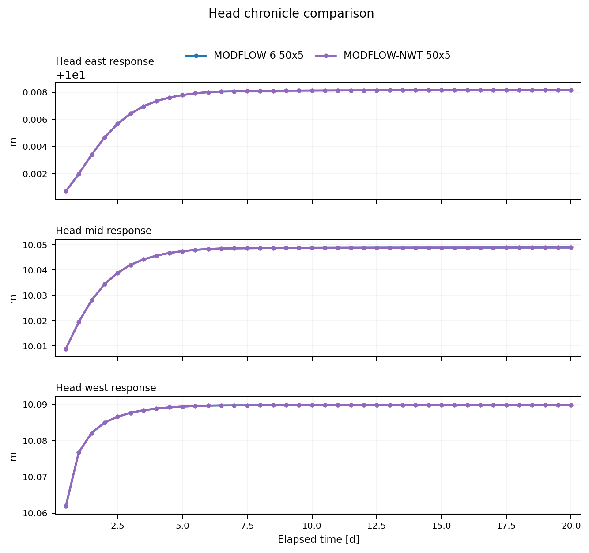
{kind=link}
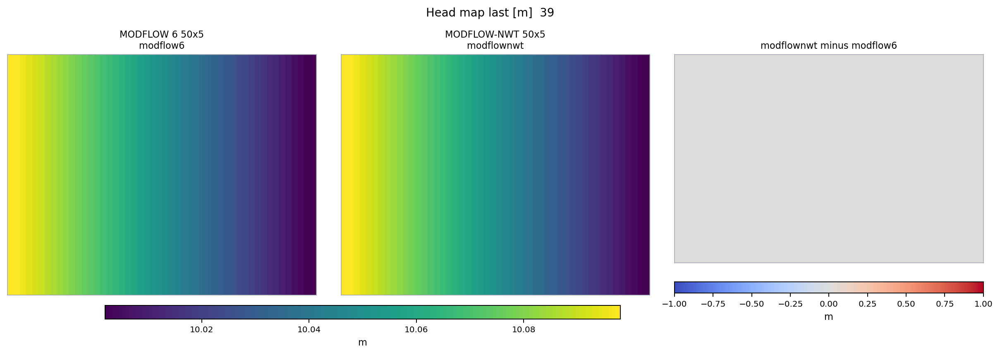
{kind=link}
{kind=link}
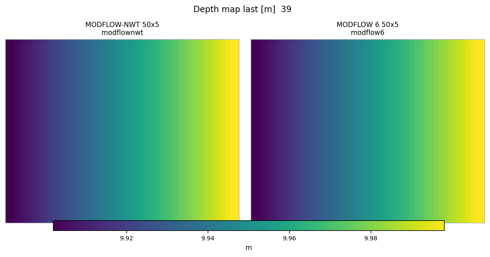
{kind=link}
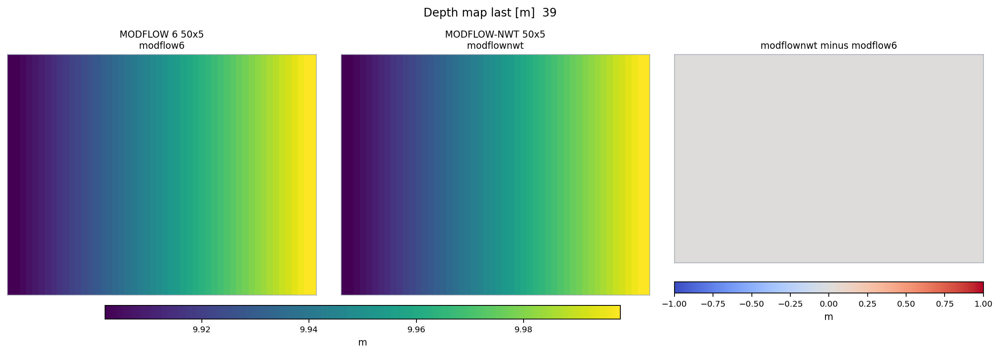
{kind=link}
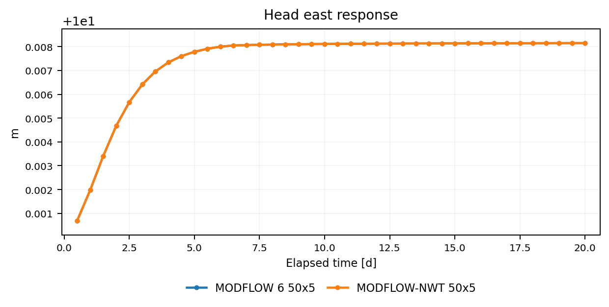
{kind=link}
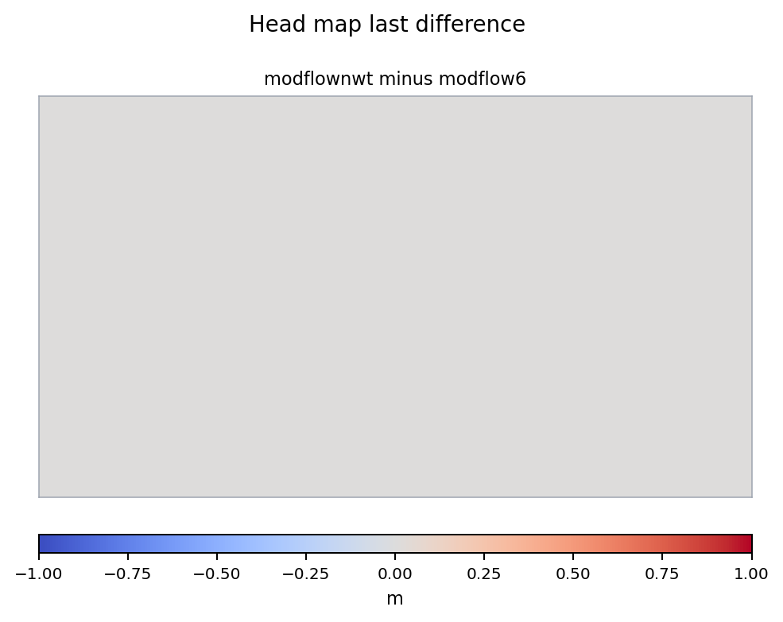
{kind=link}
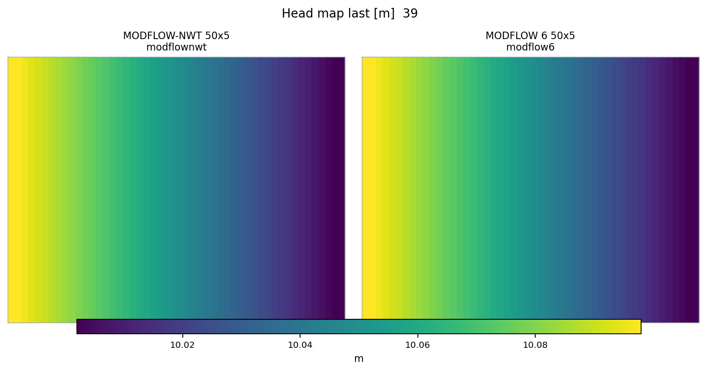
{kind=link}
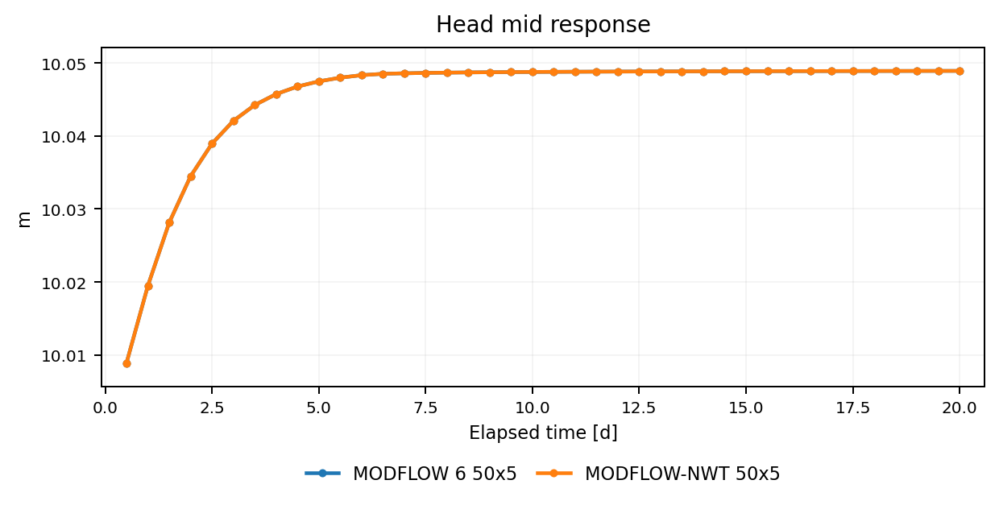
{kind=link}
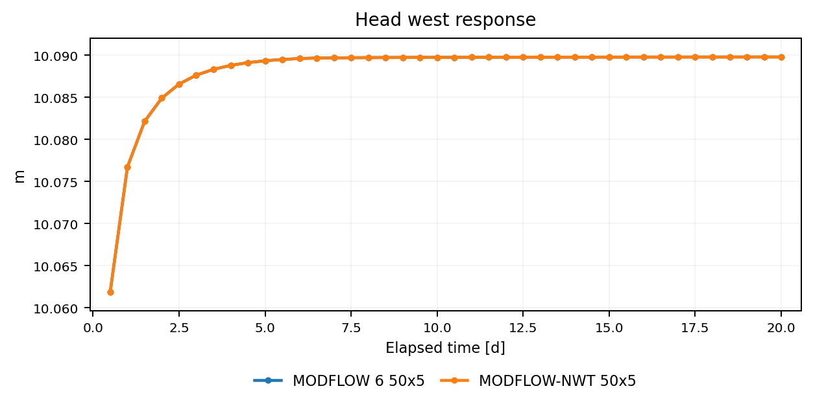
{kind=link}
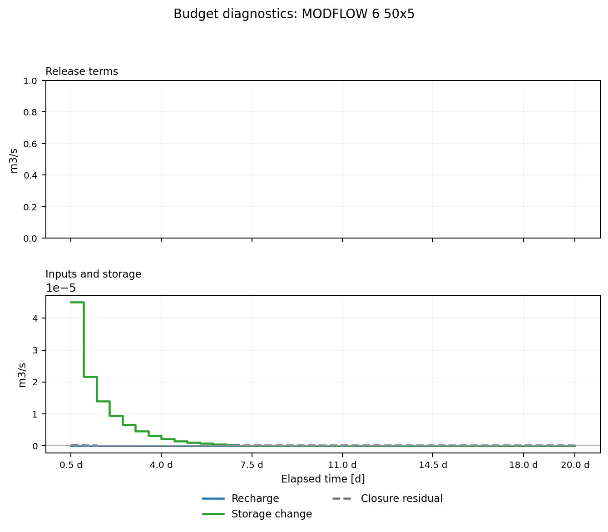
{kind=link}
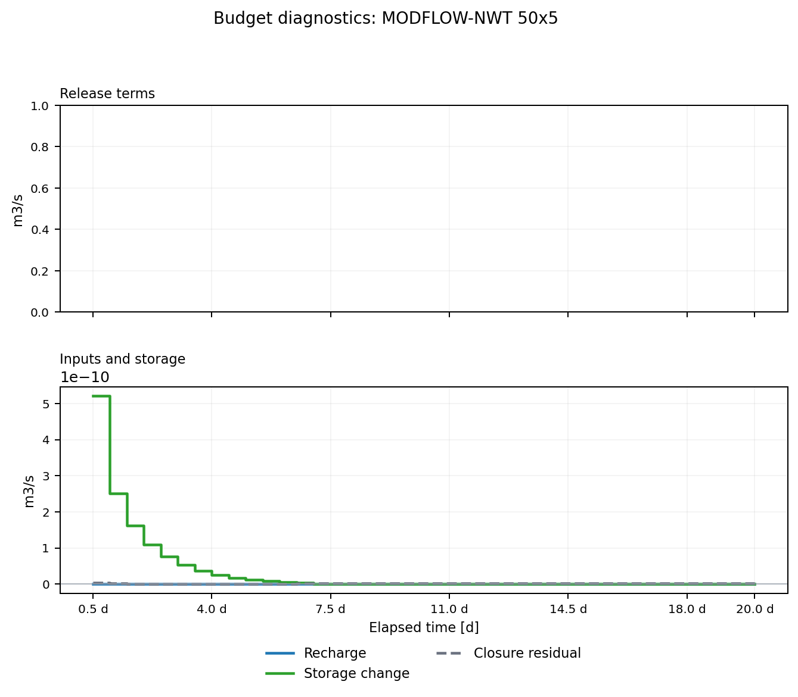
Simulations
| id | solver | mesh | status | runtime s |
|---|---|---|---|---|
| modflownwt | modflownwt | structured | reused | |
| modflow6 | modflow6 | structured | reused |
Flux sortant comparable
Aucune ligne comparable_outflow_total_m3_s trouvee.
Metriques principales
| simulation | observable | n | mae | rmse | max abs |
|---|---|---|---|---|---|
| modflownwt | depth_map_last | 250 | 0.0 | 0.0 | 0.0 |
| modflownwt | head_east_response | 40 | 0.0 | 0.0 | 0.0 |
| modflownwt | head_map_last | 250 | 0.0 | 0.0 | 0.0 |
| modflownwt | head_mid_response | 40 | 0.0 | 0.0 | 0.0 |
| modflownwt | head_west_response | 40 | 0.0 | 0.0 | 0.0 |